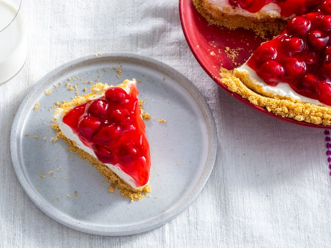

No Bake Cheesecake

Description
This no-bake cherry cheesecake has a graham cracker crust and a light and creamy filling. Top with a can of cherry pie filling for a deliciously easy dessert.
If you don't have the time (or patience) to make a full-on baked cherry cheesecake, that's OK! We're here to introduce you to the best no-bake cherry cheesecake recipe on the internet. It's made with just a few easy ingredients, but it doesn't skimp on flavors.
Be sure to save this recipe because you'll come back to it again and again.
Ingredients
- For the crust:
- 1 1/4 cups graham cracker crumbs
- 1/4 cup unsalted butter, melted
- 1/4 cup white sugar
- For the filling:
- 1 (8 ounce) package cream cheese, softened
- 1 cup powdered sugar
- 1 teaspoon vanilla extract
- 1 cup heavy whipping cream
- 1 (12.5 ounce) can cherry pie filling (or other filling of your choice)
Steps
- To make the crust: Mix graham cracker crumbs, butter, and sugar in a bowl until well incorporated and crumbly. Press mixture into a 9-inch pie plate, going up the sides as much as possible.
- To make the filling: Beat cream cheese, powdered sugar, and vanilla in a bowl with an electric mixer until smooth and spreadable.
- Beat cream in a chilled glass or metal bowl with an electric mixer until soft peaks form. Fold into cream cheese mixture until smooth.
- Pour filling into the prepared crust, and smooth the top with a spatula. Refrigerate until firm, about 2 to 3 hours.
- Spread cherry pie filling over the chilled cheesecake. Serve immediately or refrigerate until serving.
- Enjoy!
Source
Home